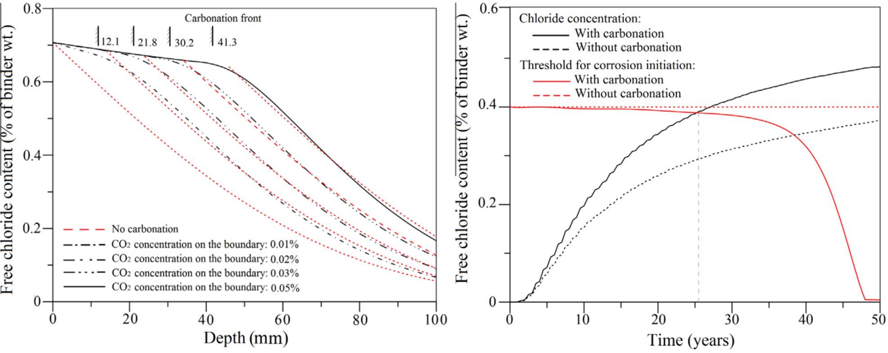
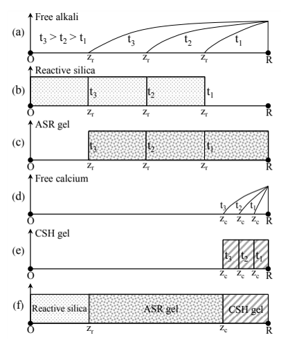
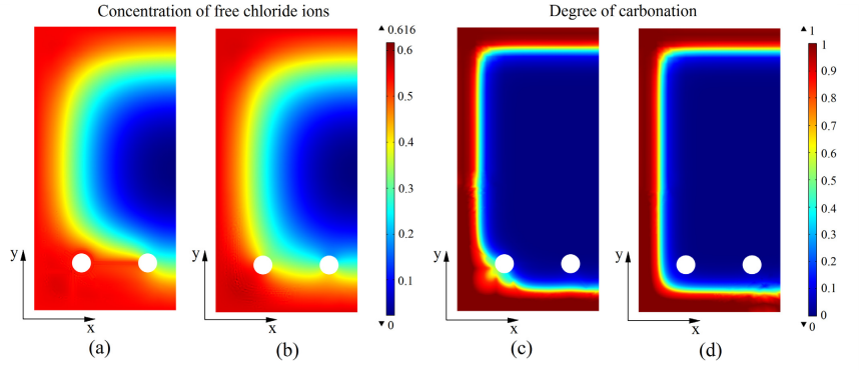
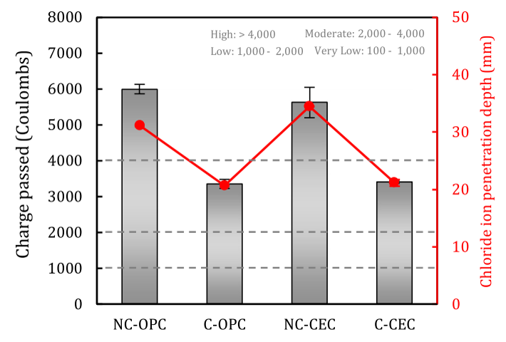

Why Can’t We Study Concrete Durability One Mechanism at a Time?
Concrete ages through interacting transport, chemistry, microstructure, and mechanics—not through isolated deterioration mechanisms
concrete durability, coupled concrete durability, concrete durability modeling, multiphysics concrete, carbonation and chloride ingress, chloride ingress in concrete, reinforcement corrosion, corrosion-induced cracking, alkali-silica reaction, ASR concrete, chemo-mechanical model, concrete service life prediction, concrete deterioration mechanisms, transport in concrete
Concrete durability is often taught as a collection of separate problems.
We study chloride ingress.
We study carbonation.
We study freezing and thawing.
We study alkali-silica reaction.
We study reinforcement corrosion.
This separation is useful in the classroom and often unavoidable in laboratory testing.
But real concrete does not know which chapter of the textbook we are studying.
A concrete structure experiences mechanical deformation, moisture transport, ion migration, gas diffusion, chemical reactions, hydration, dissolution and precipitation of solids, corrosion, and cracking at the same time.
More importantly, these processes interact.
A crack changes transport.
Transport changes chemical reaction.
Chemical reaction changes pore structure.
Pore structure changes transport again.
Reaction products may expand and generate stress.
Stress creates more cracks.
That is why concrete durability becomes much more difficult than solving several independent diffusion problems.
For more than a decade, a significant part of my research has dealt with different pieces of this coupled problem—from carbonation and chloride ingress to reinforcement corrosion and alkali-silica reaction (ASR). I remain interested in it because the central difficulty has not disappeared:
Concrete durability is the evolution of a reactive porous solid under interacting transport, chemical, and mechanical processes.
This article explains why that statement matters.
The traditional picture is too simple
A simple durability model often starts with something like Fickian diffusion:
\[ \frac{\partial C}{\partial t} = \nabla \cdot \left(D\nabla C\right), \]
where \(C\) is the concentration of a transported species and \(D\) is a diffusion coefficient.
This equation is extremely useful.
But what exactly is \(D\)?
If the pore structure changes because of carbonation, hydration, precipitation, dissolution, or cracking, the diffusion coefficient should change.
And what exactly is being transported?
Chloride may exist as free chloride in the pore solution or may be chemically bound. Carbonation can change that binding capacity and release previously bound chloride. Moisture changes the pathways available to gases and ions. Temperature changes reaction and transport rates.
Even the threshold for reinforcement depassivation may evolve as the chemical condition of the pore solution changes.
So the actual problem is closer to
environment
↓
moisture / ions / gases / heat
↓
transport through pores
↓
chemical and electrochemical reactions
↓
solid formation, dissolution, and pore-structure change
↓
stress, strain, expansion, and cracking
↓
new transport paths
↺The last arrow is the important one.
The material through which diffusion occurs is itself changing.
Example 1: carbonation and chloride ingress are not independent
Carbonation and chloride ingress provide a particularly clear example.
A conventional durability assessment may calculate a carbonation depth and a chloride profile independently and then compare each with a corrosion criterion.
That approach implicitly assumes that carbonation does not substantially change chloride transport.
But carbonation changes the chemistry and microstructure of concrete.
In our combined carbonation-chloride model, we considered coupled transport of carbon dioxide, chloride ions, moisture, and heat. Carbonation also changed the pore structure and chloride-binding capacity.
One particularly important mechanism is the decomposition of chloride-bearing Friedel’s salt during carbonation. Chloride that had been chemically bound can be released back into the pore solution.
Schematically,
\[ \text{bound chloride} \;\xrightarrow{\text{carbonation}}\; \text{free chloride in pore solution}. \]
The significance is easy to miss if the two deterioration mechanisms are solved independently.
The chloride concentration is not governed only by chloride entering from the exposed surface. A chemical reaction occurring inside the concrete can create an internal source of free chloride.

Figure Figure 1 illustrates the point.
The important observation is not merely that carbonation exists at the same time as chloride ingress.
It is that carbonation changes the chloride problem itself.
In the illustrative example in that study, the calculated corrosion-initiation time was reduced by about 40% when the combined mechanism was considered.
That result has a broader engineering meaning:
When one deterioration process changes the state variables governing another process, adding two independent predictions is not enough.
A coupled durability problem needs state variables, not labels
The words carbonation, chloride ingress, ASR, and corrosion are useful names for recognizable deterioration phenomena.
But computationally, it is often more useful to think in terms of evolving state variables.
For example:
- moisture content or relative humidity,
- temperature,
- carbon dioxide concentration,
- free and bound chloride,
- oxygen concentration,
- alkali concentration,
- calcium concentration,
- pH,
- degree of carbonation,
- porosity,
- characteristic pore size,
- reaction-product content,
- corrosion current,
- mechanical damage,
- strain and stress.
The deterioration label is then an emergent result of interactions among these variables.
This way of thinking is familiar in mechanics.
A structural engineer does not usually say that equilibrium, constitutive behavior, and compatibility are three unrelated structural problems. They are different parts of one mechanical system.
Durability should often be viewed in the same way.
Example 2: corrosion creates the crack that accelerates corrosion
After reinforcement depassivation, the coupling becomes even stronger.
Corrosion is an electrochemical process. Iron dissolves, oxygen participates in cathodic reactions, corrosion products form, and the rust occupies a larger effective volume than the consumed steel.
That expansion generates pressure on the surrounding concrete.
Once cracking starts, the transport problem changes.
The cracked concrete provides easier pathways for moisture, oxygen, carbon dioxide, and chloride ions.
Therefore the sequence is not simply
chloride
→ corrosion
→ crackbut rather
chloride / carbonation
→ depassivation
→ electrochemical corrosion
→ rust expansion
→ cracking
→ faster transport
→ changed corrosion
→ further crackingThis is a genuine feedback loop.
In our two-dimensional mechano-chemical corrosion model, mass transport, carbonation, electrochemical reactions, rust expansion, and concrete cracking were coupled. The anode region was not fixed in advance; it developed as local chemical conditions changed.

Figure Figure 2 is, to me, one of the clearest demonstrations of why durability must be treated as a coupled problem.
If cracking were only an output quantity, we could calculate transport first and mechanics later.
But once cracking modifies transport, the two calculations cannot remain one-way.
In the example studied, including mechanical damage substantially accelerated chloride arrival at parts of the reinforcement. At one reported location, the calculated corrosion-initiation time decreased from more than 60 years to about 28 years when the damage feedback was included.
The exact number belongs to that particular numerical example.
The general principle is more important:
Damage changes the environment experienced by the material inside the structure.
Example 3: ASR requires chemistry, moisture, and mechanics in sequence
Alkali-silica reaction looks different from reinforcement corrosion, but it exposes the same multiphysics structure.
ASR begins with chemical attack on reactive silica.
Alkali participates in forming an ASR product. The product then imbibes water and swells. The swelling generates pressure on the surrounding solid skeleton. That pressure causes expansion and damage.
A useful conceptual sequence is
alkali transport
→ silica reaction
→ formation of basic ASR gel
→ water imbibition
→ gel swelling
→ expansive pressure
→ mechanical damageIn our chemo-mechanical ASR model, the formation of the basic gel and the swelling of the gel were deliberately separated.
The first is controlled primarily by the chemical availability of alkali.
The second requires moisture.
This distinction matters because the amount of reaction product and its swelling capacity are not the same physical quantity.

Figure Figure 3 shows this internal evolution at the scale of a reactive aggregate.
Calcium adds another level of coupling. Calcium entering the reacted layer can replace alkali and form C-S-H-like products. The chemical composition of the gel influences its capacity to swell.
Therefore ASR cannot be understood completely by asking only:
How fast does alkali diffuse?
We also need to ask:
- How much reactive silica remains?
- What reaction products form?
- How much water reaches the gel?
- What is the chemical composition of the product?
- How much swelling can that product generate?
- What stress does the swelling impose on the surrounding concrete?
- How does the resulting damage alter subsequent transport?
The difficulty is not an excessively complicated equation.
The difficulty is that the material is changing across multiple scales.
Hydration and nanoscale solid growth belong in the same picture
Concrete begins evolving from the moment water contacts cement.
Hydration consumes water and unhydrated phases while creating new solids. These solids progressively construct the load-bearing skeleton and pore network.
Later durability reactions continue modifying that network.
Carbonation can dissolve or consume some phases and precipitate calcium carbonate.
ASR creates reaction products around or inside reactive aggregates.
Corrosion creates solid rust products at the steel-concrete interface.
At sufficiently small scales, durability is therefore inseparable from where solids grow, dissolve, and reorganize.
This is why a fixed value of porosity is often not enough.
Two concretes with the same total porosity can behave differently if their pore connectivity, pore-size distribution, saturation, and solid-phase distribution differ.
The important variable for transport is not simply how much empty space exists.
It is whether that space forms connected pathways.
An apparent contradiction: carbonation can accelerate chloride damage—or improve chloride resistance
Coupling also warns us against turning an observed mechanism into a universal rule.
Our earlier work on mature reinforced concrete showed how carbonation can accelerate chloride-related corrosion through changes in binding, pore structure, pH, and chloride release.
But accelerated carbonation can also be deliberately used at early age to densify some concrete systems.
In recent work on carbon-eating concrete incorporating electric-arc-furnace slag, accelerated carbonation produced calcium-carbonate-rich surface densification and reduced pore volume near the exposed surface. The carbonated specimens showed lower chloride penetration than their non-carbonated counterparts.

This is an important reminder.
It would be wrong to conclude either
carbonation always makes chloride ingress worse
or
carbonation always improves chloride resistance.
The effect depends on the material state and the pathway by which that state was reached.
Early accelerated carbonation of a designed material can create dense reaction products and refine surface pores.
Long-term environmental carbonation of reinforced concrete can reduce alkalinity, modify chloride binding, release bound chloride, and contribute to reinforcement depassivation.
The word carbonation is the same.
The coupled state of the material is not.
This is exactly why mechanistic modeling is necessary.
Durability has several characteristic scales
Another source of difficulty is scale.
At the nanoscale and microscale, we may care about:
- hydration products,
- ion binding,
- gel chemistry,
- precipitation and dissolution,
- pore geometry.
At the mesoscale, we may care about:
- aggregates,
- interfacial transition zones,
- localized reaction,
- distributed microcracking.
At the structural scale, we care about:
- cover thickness,
- exposure boundaries,
- crack networks,
- reinforcement layout,
- corrosion initiation and propagation,
- stiffness and load-carrying capacity,
- service life and reliability.
A useful model does not necessarily resolve every scale explicitly.
That would often be computationally impossible.
The challenge is to decide which small-scale mechanisms must survive in the larger-scale model.
For example, we do not need to simulate every Friedel’s salt crystal to represent carbonation-induced release of bound chloride.
But the release mechanism may need to appear as a source term in the macroscopic mass balance.
Likewise, we do not need to model every ASR molecule.
But the model must distinguish formation of reaction product from moisture-driven swelling if those two processes control different aspects of the observed expansion.
This is model reduction with physical meaning.
Why single-mechanism tests are still necessary
None of this means that isolated durability tests are useless.
They are essential.
A chloride migration test can identify transport characteristics.
A carbonation test can characterize carbonation resistance.
An ASR expansion test can reveal aggregate reactivity.
A freeze-thaw test can compare mixture performance.
The problem occurs when we move from material characterization to service-life prediction and assume that the isolated mechanisms remain independent in the real structure.
Single-mechanism experiments help identify components of the problem.
Combined models ask how those components interact.
The distinction is important:
laboratory isolation
helps us understand a mechanism
structural exposure
requires us to understand interactionProbability makes the coupling even more important
Durability parameters are uncertain.
Cover thickness varies.
Surface chloride concentration varies.
Humidity and temperature vary.
Diffusion coefficients vary.
Chemical threshold values vary.
Material composition varies.
For this reason, service-life prediction is naturally probabilistic.
But probabilistic analysis does not repair an incomplete physical model.
If the deterministic model assumes independent carbonation and chloride ingress when the mechanisms are actually coupled, adding sophisticated probability distributions only quantifies uncertainty around the wrong physical structure.
In our probabilistic study of combined carbonation and chloride ingress, the coupled calculation predicted a much higher probability of corrosion initiation than treating the mechanisms independently.
A later simplified probabilistic model was developed because the comprehensive coupled formulation was computationally expensive.
That progression is itself instructive:
understand the coupled physics
→ construct the comprehensive model
→ identify dominant variables
→ simplify without destroying the coupling
→ perform practical reliability analysisThis is usually safer than starting with a simple independent model and adding empirical correction factors without knowing which interactions matter.
What should a future durability model contain?
There is no universal model that must include everything.
The appropriate level of coupling depends on the engineering question.
But for difficult long-term durability problems, I would think in terms of five interacting layers.
1. Mechanical fields
Stress, strain, deformation, cracking, and damage.
2. Transport fields
Moisture, heat, ions, gases, and sometimes electrical potential.
3. Chemical and electrochemical reactions
Carbonation, chloride binding and release, hydration, ASR chemistry, corrosion reactions, dissolution, and precipitation.
4. Evolving microstructure
Porosity, pore-size distribution, connectivity, reaction layers, newly formed solids, and damaged pathways.
5. Structural consequence
Reinforcement depassivation, corrosion loss, cracking, stiffness degradation, strength reduction, and probability of reaching an unacceptable state.
The key requirement is not to maximize the number of equations.
It is to retain the feedback loops that control the engineering outcome.
My own route through this problem
My work in this area has not followed a single deterioration mechanism.
The questions gradually moved across scales and couplings.
Early experimental work examined concrete exposed to combined freeze-thaw action and de-icing salts, including the influence of waste-glass sludge on strength, chloride penetration, scaling, and freeze-thaw resistance.
The carbonation-chloride studies then focused on why two major causes of reinforcement depassivation should not be treated independently.
That led naturally to probabilistic service-life analysis.
The corrosion work extended the chain beyond initiation:
transport
→ depassivation
→ electrochemistry
→ rust
→ expansive pressure
→ cracking
→ altered transportThe ASR studies approached another deterioration mechanism but again required transport, reaction, evolving solid products, water uptake, and mechanical damage.
More recent carbonation work has moved toward deliberately using reaction and microstructure evolution to improve performance rather than merely predict deterioration.
The common subject is therefore not chloride, carbonation, corrosion, ASR, glass, or slag individually.
It is the coupled evolution of concrete.
That is the research problem that still interests me.
Engineering takeaway
The most important lesson is simple:
Concrete durability is not a collection of independent deterioration mechanisms. It is the coupled evolution of transport, reaction, microstructure, and mechanics.
A useful durability model therefore should not be judged primarily by how many mechanisms it contains.
It should be judged by whether it preserves the interactions that change the engineering answer.
When a chemical reaction changes transport, couple it.
When damage changes transport, couple it.
When moisture controls swelling, couple it.
When newly formed solids change pore connectivity, couple it.
And when the interaction is weak enough to ignore, demonstrate why.
That is how a complicated multiphysics problem becomes an engineering model rather than merely a large collection of equations.
Original research
Zhu, X., Zi, G., Cao, Z., & Cheng, X. (2016).
Combined effect of carbonation and chloride ingress in concrete.
Construction and Building Materials, 110, 369–380.
https://doi.org/10.1016/j.conbuildmat.2016.02.034
Zhu, X., Zi, G., Lee, W., Kim, S., & Kong, J. (2016).
Probabilistic analysis of reinforcement corrosion due to the combined action of carbonation and chloride ingress in concrete.
Construction and Building Materials, 124, 667–680.
https://doi.org/10.1016/j.conbuildmat.2016.07.120
Zhu, X., & Zi, G. (2017).
A 2D mechano-chemical model for the simulation of reinforcement corrosion and concrete damage.
Construction and Building Materials, 137, 330–344.
https://doi.org/10.1016/j.conbuildmat.2017.01.103
Zhu, X., Zi, G., Sun, L., & You, I. (2019).
A simplified probabilistic model for the combined action of carbonation and chloride ingress.
Magazine of Concrete Research.
https://doi.org/10.1680/jmacr.18.00140
Sun, L., Zhu, X., Zhuang, X., & Zi, G. (2020).
Chemo-Mechanical Model for the Expansion of Concrete due to Alkali Silica Reaction.
Applied Sciences, 10, 3807.
https://doi.org/10.3390/app10113807
Sun, L., Zhu, X., Kim, M., & Zi, G. (2021).
Alkali-silica reaction and strength of concrete with pretreated glass particles as fine aggregates.
Construction and Building Materials, 271, 121809.
https://doi.org/10.1016/j.conbuildmat.2020.121809
Kim, J., Moon, J.-H., Shim, J. W., Sim, J., Lee, H.-G., & Zi, G. (2014).
Durability properties of a concrete with waste glass sludge exposed to freeze-and-thaw condition and de-icing salt.
Construction and Building Materials, 66, 398–402.
https://doi.org/10.1016/j.conbuildmat.2014.05.081
You, I., Zi, G., Yoo, D.-Y., & Lange, D. A. (2019).
Durability of Concrete Containing Liquid Crystal Display Glass Powder for Pavement.
ACI Materials Journal, 116(6).
https://doi.org/10.14359/51716814
Lee, O., Parr, J.-L. M., Zi, G., & Yoon, Y.-S. (2025).
Optimizing accelerated carbonation of carbon-eating concrete on early age microstructure and durability improvement.
Construction and Building Materials, 491, 142654.
https://doi.org/10.1016/j.conbuildmat.2025.142654